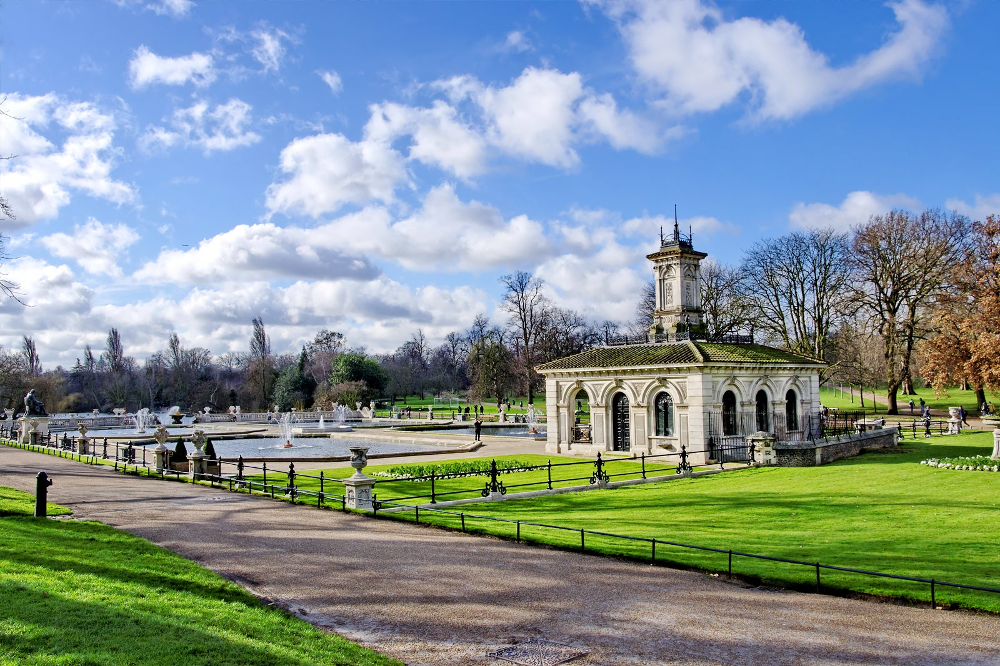
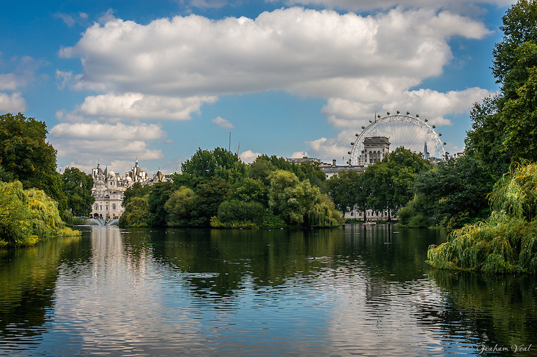

Diana Rugea
A little bit about me.
Posted Thursday, 19th of October, 2023
I am 27 years old and I'm from Oradea, Romania. I have recently moved back home after living in London, UK for almost 8 years. Although I have always kept busy with work and studies, I always find the time to learn new things.
If I could choose 3 of my favourite activites to do, these would be:
- Sports & Fitness
- Video Gaming
- Nature Walking
1. Sports & Fitness
Last week I took an online course about Yoga, which was really interesting, since I didn't know much about it. I always took classes but I've never taken the time to actually learn about it.
- Yoga is a meditative process of self-discovery and liberation. It is a diverse collection of practices that aims to control the mind, recognize a detached witness consciousness, and free oneself from the cycle of birth and death. It teaches us to see ourselves clearly, to understand what is true about who we are, and to let go of anything that does not serve us. It helps us to become aware of our thoughts, feelings, and beliefs, and to change them when they no longer serve us. It gives us the tools to make better choices in life, and to live more fully. Yoga is a practice that allows us to transform and purify our bodies, minds, and souls. It expands our consciousness to help us connect with nature and the universe around us. It also gives us greater access to inner resources to teach us about self-awareness, acceptance, compassion, patience, gratitude, forgiveness, humility, love, peace, and joy.
- Yama – The moral codes of conduct
- Niyama – The physical observances and internal practices
- Asana – The proper posture
- Pranayama – The proper breathing exercises
- Pratyahara– The withdrawal of senses from external distractions
- Dharana - The mental concentration and focusing the mind
- Dhyana - The meditation and focus on a single point
- Samadhi - The cessation of all mental activity to attain a state of oneness
What is Yoga?
Best Practices of Yoga
- Raja (the royal path) – focuses on meditation practices
- Karma (the path of action) – focuses on action and service in daily life
- Jnana (the path of knowledge) – focuses on discriminative wisdom and self inquiry
- Bhakti (the path of devotion) – focuses on devotion to God
- Tantra (the path of ecstasy ) – focuses on ritual and initiation
- Hatha (the forceful path) – focuses on energy and movement of the body
Types of Yoga
2. Favourite Video Games
Most video games are fun and engaging. Gaming produces a release of dopamine (the happy hormone) which will make you feel good and help you cope with the stresses of everyday life.
- Fifa 23
- Anno 1800
- Panet Zoo
FIFA 23 brings The World’s Game to the pitch, with HyperMotion2 Technology, men’s and women’s FIFA World Cup™, women’s club teams, cross-play features**, and more.
Anno 1800™ – Lead the Industrial Revolution! Welcome to the dawn of the Industrial Age. The path you choose will define your world. Are you an innovator or an exploiter? A conqueror or a liberator? How the world remembers your name is up to you.
Build a world for wildlife in Planet Zoo. From the developers of Planet Coaster and Zoo Tycoon comes the ultimate zoo sim. Construct detailed habitats, manage your zoo, and meet authentic living animals who think, feel and explore the world you create around them.
3. Favourite Parks for a walk in London
Walking helps boost your mood because it increases blood flow and blood circulation to the brain and body.
|  |
Hyde ParkHyde Park is a 350 acres, historic Grade I-listed urban park in Westminster, Greater London. A Royal Park, it is the largest of the parks and green spaces that form a chain from Kensington Palace through Kensington Gardens and Hyde Park, via Hyde Park Corner and Green Park, past Buckingham Palace to St James's Park. |
|  |
St James's ParkSt James's Park is a 23-hectare urban park in the City of Westminster, central London. A Royal Park, it is at the southernmost end of the St James's area, which was named after a once isolated medieval hospital dedicated to St James the Less, now the site of St James's Palace. |
 |
Richmond ParkRichmond Park, in the London Borough of Richmond upon Thames, is the largest of London's Royal Parks and is of national and international importance for wildlife conservation. It was created by Charles I in the 17th century as a deer park. |